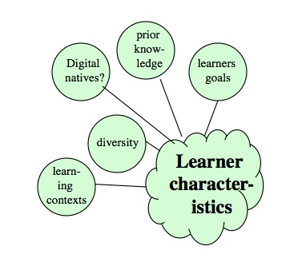

6.3 Características dos aprendizes



Provavelmente, nada reflete mais o ensino na era digital do que a mudança nas características dos aprendizes em relação à era industrial.
6.3.1 Diversidade crescente
Notei no Capítulo 1 (Seção 6) que em países desenvolvidos como o Canadá:
espera-se que as instituições públicas pós-secundárias representem a mesma diversidade socioeconômica e cultural da sociedade em geral, em vez de serem instituições reservadas a uma minoria de elite.
Em uma época em que o desenvolvimento econômico está estreitamente associado a níveis mais elevados de escolaridade, o objetivo atual é elevar o maior número possível de estudantes aos padrões exigidos, em vez de focar apenas nas necessidades dos alunos mais aptos. Isto significa encontrar formas de ajudar uma vasta gama de estudantes com níveis de aptidão e/ou conhecimentos prévios muito diferentes a obterem sucesso. Claramente, um único tamanho já não serve a todos hoje em dia. Lidar com uma população estudantil cada vez mais diversa é, assim, talvez o maior de todos os desafios que os professores e instrutores enfrentam na era digital, particularmente, mas não exclusivamente, no nível pós-secundário. Isto não é algo para o qual os docentes qualificados essencialmente em termos de conhecimento da matéria estejam bem preparados.
A combinação de um bom design com uma utilização adequada da tecnologia facilitará grandemente a personalização da aprendizagem, permitindo, por exemplo, que diferentes estudantes trabalhem a ritmos distintos e foquem a aprendizagem nos interesses e necessidades específicas dos alunos, assegurando assim o envolvimento e a motivação para uma gama diversificada de estudantes. No entanto, o primeiro passo, e talvez o mais importante, consiste em os professores conhecerem os seus alunos e, em particular, identificarem, a partir da vasta gama de informações relativas aos estudantes e às suas diferenças, quais as mais importantes para o design do ensino e da aprendizagem na era digital. Apresento algumas das características que considero importantes sob a perspectiva do planejamento do ensino.
6.3.2 O contexto profissional e familiar
Dois fatores tornam o contexto profissional e familiar um elemento importante a considerar no planejamento do ensino e da aprendizagem: os estudantes trabalham cada vez mais enquanto estudam (cerca de metade de todos os estudantes pós-secundários canadenses também trabalha, e os que trabalham dedicam, em média, 16 horas por semana — Marshall, 2010); e a faixa etária dos estudantes continua a alargar-se, com a idade média dos alunos a aumentar lentamente (em 2016, na Universidade da Colúmbia Britânica em Vancouver, a idade média dos estudantes de graduação era de 21 anos, e a idade média dos estudantes de pós-graduação era de 31 anos — UBC, 2017).
Existem várias razões para o aumento da idade média dos estudantes, pelo menos na América do Norte:
- os estudantes demoram mais tempo a graduar-se (em parte porque tendem a adotar uma carga horária de disciplinas menor quando trabalham);
- um número crescente de estudantes prossegue estudos de pós-graduação;
- mais estudantes regressam para obter disciplinas e programas adicionais após a graduação (aprendizes ao longo da vida), principalmente por razões econômicas.
Os estudantes parcial ou totalmente empregados, ou os estudantes com família, necessitam cada vez mais de maior flexibilidade nos seus estudos, evitando, em particular, longas deslocações diárias entre a casa, o trabalho e a instituição de ensino. Estes estudantes pretendem, cada vez mais, disciplinas híbridas ou totalmente on-line, e módulos menores, certificados ou programas que possam conciliar com a sua vida profissional e familiar.
6.3.3 Objetivos dos aprendizes
A compreensão da motivação dos estudantes e do que estes esperam obter de uma disciplina ou programa deve também influenciar o planejamento do ensino. Para a aprendizagem acadêmica, é frequentemente necessário encontrar formas de orientar os estudantes — cuja abordagem à aprendizagem é inicialmente impulsionada por recompensas extrínsecas, tais como notas ou qualificações — para uma abordagem que os envolva e motive na própria matéria. Os potenciais estudantes que já possuem uma qualificação pós-secundária e um bom emprego podem não pretender realizar um conjunto predeterminado de disciplinas, mas sim obter apenas áreas específicas de conteúdo de disciplinas existentes, adaptadas às suas necessidades (por exemplo, sob demanda e ministradas on-line). Assim, é importante dispor de algum tipo de conhecimento ou compreensão sobre a razão pela qual os aprendizes tendem a escolher a sua disciplina ou programa e o que esperam obter dele.
6.3.4 Conhecimentos ou competências prévias
A aprendizagem futura depende frequentemente de os estudantes possuírem conhecimentos prévios ou capacidade para realizar atividades a um determinado nível. Os professores procuram preencher a diferença entre o que um aprendiz consegue fazer sem ajuda e o que consegue fazer com ajuda, aquilo a que Vygotsky (1978) chamou a zona de desenvolvimento proximal. Se o nível de dificuldade do ensino for direcionado muito além da capacidade ou dos conhecimentos e competências prévias de um aprendiz, a aprendizagem não ocorre.
No entanto, quanto mais diversos forem os estudantes em um programa, mais diversos serão os níveis de conhecimento e competências que tendem a trazer consigo. De fato, os aprendizes ao longo da vida ou os novos imigrantes que repetem uma matéria pelo fato de as suas qualificações estrangeiras não serem reconhecidas podem trazer conhecimentos especializados ou avançados que podem ser aproveitados para enriquecer a experiência de aprendizagem de todos. Ao mesmo tempo, alguns estudantes podem não dispor dos mesmos conhecimentos básicos que os restantes em uma disciplina e necessitarão de maior apoio. Em um contexto como este, é importante desenhar a experiência de aprendizagem de modo a que seja suficientemente flexível para acolher estudantes com uma vasta gama de conhecimentos e competências prévias.
6.3.5 Nativos digitais
A maioria dos estudantes de hoje cresceu com tecnologias digitais, tais como telefones celulares, tablets e mídias sociais, incluindo Facebook, Twitter, blogs e wikis. Prensky (2001) e outros (por exemplo, Tapscott, 2008) argumentam que estes estudantes não só são mais proficientes na utilização de tais tecnologias do que as gerações anteriores, como também pensam de forma diferente.
No entanto, é particularmente importante compreender que os próprios estudantes variam muito na sua utilização das mídias sociais e das novas tecnologias, que a sua utilização é impulsionada prioritariamente por exigências sociais e pessoais e que a sua utilização de tecnologias digitais não se transfere naturalmente para o uso educacional. Eles utilizarão, contudo, as novas tecnologias e as mídias sociais para a aprendizagem quando os professores apresentarem argumentos convincentes nesse sentido e quando os alunos puderem verificar que a utilização das mídias digitais os ajudará diretamente nos seus estudos. Para que isso aconteça, contudo, são necessárias escolhas de design deliberadas por parte do professor. (Para mais informações sobre a questão dos nativos digitais, ver o Capítulo 9, Seção 2.3)
6.3.6 Conclusão
O contexto profissional e familiar, os objetivos dos aprendizes e os conhecimentos e competências prévias dos estudantes (incluindo a sua competência nas mídias digitais) constituem alguns dos fatores críticos que devem influenciar o planejamento do ensino. Para alguns professores, outras características dos aprendizes, tais como os estilos de aprendizagem, as diferenças de gênero ou a bagagem cultural, podem ser mais importantes, dependendo do contexto. Seja qual for o contexto, um bom planejamento do ensino exige informações de qualidade sobre os alunos a quem vamos ensinar e, em especial, um bom planejamento necessita de dar resposta à diversidade crescente dos nossos estudantes.
Referências
Marshall, K. (2011) Employment patterns of post-secondary students, Ottawa: Statistics Canada
Prensky, M. (2001) ‘Digital natives, Digital Immigrants’ On the Horizon Vol. 9, No. 5
Tapscott, D. (2008) Grown Up Digital New York: McGraw Hill
University of British Columbia (2017) 2016/2017 Annual Report on Enrolment Vancouver BC: University of British Columbia
Vygotsky, L. (1978) Mind in Society: Development of Higher Psychological Processes Cambridge MA: Harvard University Press
Atividade 6.3 Quem são os seus estudantes?
1. Como caracterizaria os estudantes a quem ensina: estudantes em tempo integral vindos do ensino médio; estudantes que trabalham em tempo parcial; ou estudantes que trabalham em tempo integral? Como se distribuiria uma turma típica sua entre estes três grupos? Dispõe das informações necessárias para efetuar esta análise?
2. Considera que os estudantes pensam ou estudam de forma diferente hoje em dia por causa das mídias sociais? De que forma isso afeta os seus estudos? Sente a necessidade de responder a isto de alguma forma?
3. Quanta variação existe entre os seus estudantes ao nível dos conhecimentos prévios e/ou da proficiência linguística? De que forma isso afeta a sua maneira de ensinar?
Talvez queira ler o Capítulo 9, Seção 2 e o Capítulo 10, Seção 3 antes de responder a estas questões.
Este exercício serve prioritariamente para a sua reflexão, mas apresento alguns comentários sobre estas questões no podcast abaixo:
Um elemento de áudio foi excluído desta versão do texto. Você pode ouvi-lo on-line aqui: https://pressbooks.bccampus.ca/teachinginadigitalagev2/?p=363